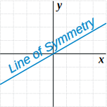
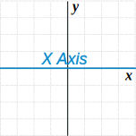
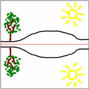
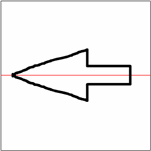
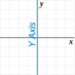
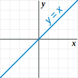
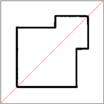
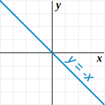
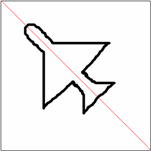

Reflection Symmetry
Reflection Symmetry
Reflection Symmetry (sometimes called Line Symmetry or Mirror Symmetry) is easy to see, because one half is the reflection of the other half.
 |
Here my dog "Flame" has her face made perfectly The white line down the center is the Line of Symmetry |

The reflection in this lake also has symmetry, but in this case:
- the Line of Symmetry runs left-to-right
- it is not perfect symmetry, because the image is changed a little by the lake surface.
Line of Symmetry

The Line of Symmetry (also called the Mirror Line) can be in any direction.
But there are four common directions, and they are named for the line they make on the standard XY graph.
See these examples (the artwork was made using Symmetry Artist) :
|
Line of Symmetry
|
Sample Artwork
|
Example Shape
|
|  |  |  |
|  |  |
 |
|  |  |
 |
|  |  |
 |
Plane Shapes
Not all shapes have lines of symmetry, or they may have several lines of symmetry. For example, a Triangle can have 3, or 1 or no lines of symmetry:
 |
 |
 |
||
| Equilateral Triangle (all sides equal, all angles equal) |
Isosceles Triangle (two sides equal, two angles equal) |
Scalene Triangle (no sides equal, no angles equal) |
||
| 3 Lines of Symmetry | 1 Line of Symmetry | No Lines of Symmetry |
I have collected some more examples at Lines of Symmetry of Plane Shapes.